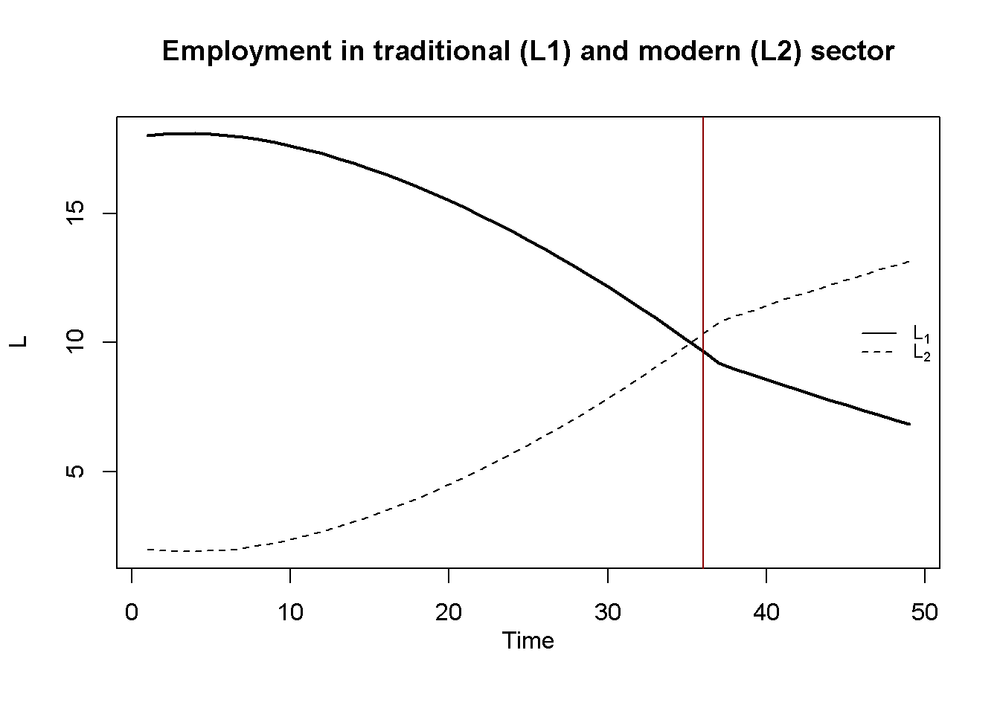

# Clear the environment
rm(list=ls(all=TRUE))
# Set number of periods
T=250
# Set number of scenarios (including baseline)
S=2
# Set period in which shock/shift will occur
s=15
# Create (S x T)-matrices that will contain the simulated data
Y1=matrix(data=1,nrow=S,ncol=T) # Output in sector 1 (traditional)
Y2=matrix(data=1,nrow=S,ncol=T) # Output in sector 2 (modern)
L1=matrix(data=1,nrow=S,ncol=T) # employment in sector 1
L2=matrix(data=1,nrow=S,ncol=T) # employment in sector 2
w2=matrix(data=1,nrow=S,ncol=T) # real wage sector 2
K=matrix(data=1,nrow=S,ncol=T) # capital stock (only in sector 2)
P2=matrix(data=1,nrow=S,ncol=T) # profits in sector 2
# Set fixed parameter values
alpha=0.7 # labour elasticity of output, sector 1
rho=1 # wage premium
L=20 # total labour supply (exogenous)
gamma=0.2 # labour supply coefficient, sector 2
lambda=10 # employment at which MPL in sector 1 becomes zero
beta=0.7 # labour elasticity of output, sector 2
# Set baseline parameter values
w1=matrix(data=1,nrow=S,ncol=T) # subsistence real wage sector 1
# Set parameter values for different scenarios
w1[2,s:T]=0.9 # scenario 2: fall in subsistence wage
# Initialise such that there is surplus labour (L1 > lambda)
L1[,1]= 0.9*L
L2[,1]= L - L1[,1]
# Simulate the model by looping over T time periods for S different scenarios
for (i in 1:S){
for (t in 2:T){
for (iterations in 1:1000){ # note: order matters due to if-else condition
## Model equations
# Output sector1 and wages sector 2
if(L1[i,t]<lambda){
Y1[i,t] = (L1[i,t]^alpha)
w2[i,t]= gamma*L2[i,t]
}
else{
Y1[i,t] = lambda^alpha
w2[i,t]= w1[i,t] + rho
}
# Output sector 2
Y2[i,t]=(L2[i,t]^beta)*(K[i,t]^(1-beta))
# Profits sector 2
P2[i,t]=Y2[i,t] - w2[i,t]*L2[i,t]
# Capital accumulation sector 2
K[i,t]= K[i,t-1] + P2[i,t-1]
# Employment sector 2
L2[i,t] =(beta*Y2[i,t])/w2[i,t]
# Employment sector 1
L1[i,t] = L - L2[i,t]
} # close iterations loop
} # close time loop
} # close scenarios loop
#Calculate profit share of sector 2
PS=P2[,]/(Y1[,]+Y2[,])
#Find period in which Lewis turning point occurs
tp=c(min(which(L1[1,] < lambda)), min(which(L1[2,] < lambda)))15 A Lewis Model of Economic Development
Overview
This model captures some key features of W. Arthur Lewis (1954)’ two-sector model of the growth process of a developing country. The model describes the development process as one where a modern urban sector draws labour inputs from a traditional subsistence sector that is characterised by surplus labour, i.e. labour that does not produce any additional output (reflected in a zero marginal product). Workers in the traditional sector are paid a fixed subsistence wage. The presence of surplus labour allows the modern sector to attract workers from the traditional sector for a small wage premium above the subsistence wage. This enables the modern sector to make profits that are reinvested and thus drive capital accumulation in the modern sector. As a result, the economy undergoes industrialisation. This process of rapid structural change comes to an end when the surplus labour in the traditional sector is depleted. Labour supply then becomes sensitive to the real wage, leading to a fall in profits and a slowdown of capital accumulation.
We present a formal version of the model that is based on the graphical representation in Todaro and Smith (2015), pp. 124-127.
The Model
\[ Y_{1t}= \begin{cases} L^\alpha_{1t},& \text{if } L_{1t}\leq \lambda\\ \lambda^\alpha, & \text{if } L_{1t} > \lambda \end{cases} \tag{15.1}\]
\[ L_{1t} = L - L_{2t} \tag{15.2}\]
\[ w_{1t} = w^S \tag{15.3}\]
\[ Y_{2t} = L_{2t}^\beta K_{2t}^{1-\beta} \tag{15.4}\]
\[ w_{2t}= \begin{cases} \gamma L_{2t},& \text{if } L_{1t}\leq \lambda\\ w^S + \rho, & \text{if } L_{1t} > \lambda \end{cases} \tag{15.5}\]
\[ L_{2t}=\frac{\beta Y_{2t}}{w_{2t}} \tag{15.6}\]
\[ P_{2t}=Y_{2t} - w_{2t}L_{2t} \tag{15.7}\]
\[ K_{2t}=K_{2t-1} + P_{2t-1} \tag{15.8}\]
where the subscripts 1 and 2 refer to the traditional and modern sector, respectively, and \(Y_t\), \(L_t\), \(w_t\) \(K_t\), and \(P_t\) represent output, employment, the real wage rate, the capital stock, and profits, respectively.
Equation 15.1 describes output determination in the traditional sector. The variable \(\lambda\) is the employment level beyond which the marginal product of labour (MPL) in sector 1 becomes zero. If actual employment is below this level, the sector faces a production function that is increasing in employment but with diminishing marginal returns \((\alpha \in (0,1))\). If employment is above this threshold, there is surplus labour and output is fixed at the level implied by the level of employment for which the MPL becomes zero. Equation 15.2 says that the level of employment in the traditional sector is residually determined by the total labour supply, which we take to be exogenous, net of employment in the modern sector. By Equation 15.3, the real wage in the traditional sector is an exogenously given subsistence wage \(w^S\). Equation 15.4 is the production function of the modern sector, which exhibits constant returns to scale and diminishing marginal returns to the factors \((\beta\in (0,1))\). Equation 15.5 specifies wage determination in the modern sector. If there is surplus labour in the traditional sector, the modern sector pays a wage premium \(\rho\) on the subsistence wage. As soon as surplus labour is depleted, the modern sector faces an upward-sloping labour supply curve, which we model for simplicity as a linear function with slope coefficient \(\gamma\). Equation 15.6 is the labour demand curve of the modern sector, which is derived from optimisation. To maximise profits, the firm must equalise the real wage and the MPL: \(w_{2t}=MPL_{2t}=\beta L_{2t}^{\beta-1} K_{2t}^{1-\beta} = \beta \frac{Y_{2t}}{L_{2t}}\). Finally, Equation 15.7 defines profits in the modern sector, and Equation 15.8 describes capital accumulation in that sector, where it is assumed that all profits are invested \((P_{2t}=I_{2t})\).
Simulation
Parameterisation
Table reports the parameterisation and initial values used in the simulation. All scenarios are initialised such that there is surplus labour (\(L_{10} > \lambda\)).
Table 1: Parameterisation
| Scenario | \(\alpha\) | \(\rho\) | \(L\) | \(\beta\) | \(\gamma\) | \(\lambda\) | \(w^S\) |
|---|---|---|---|---|---|---|---|
| 1: baseline | 0.7 | 1 | 20 | 0.7 | 0.55 | 0.05 | 1 |
| 2: rise subsistence wage (\(w^S\)) | 0.7 | 1 | 20 | 0.7 | 0.55 | 0.05 | 1.1 |
Simulation code
Plots
Figure 15.1 - Figure 15.4 display the model’s dynamics under the baseline scenario. The red vertical line marks the ‘Lewis turning point’, which is the period in which the surplus labour in the traditional sector is depleted \((L_{1t}<\lambda)\). It can be seen that before the Lewis turning point is reached, output in the modern sector grows exponentially. After the turning point, it still grows but at a lower rate. This is because as the surplus labour in the traditional sector is removed, the modern sector faces an upward-sloping labour supply curve. As a result, real wages increase and profits are reduced. This slows down capital accumulation and growth. In the traditional sector, output falls somewhat after the turning point as the sector now faces diminishing marginal return to labour.
# Set start and end periods for plots
Tmax=240
Tmin=2
#Output in the two sectors, baseline
plot(Y1[1, Tmin:(Tmax+1)],type="l", col=1, lwd=2, lty=1, xlim=range(0:(Tmax)), xlab="", ylab="Y", ylim=range(Y1[1, Tmin:Tmax],Y2[1, Tmin:(Tmax)]))
title(main="Output in traditional (Y1) and modern (Y2) sector", xlab = 'Time',cex=0.8 ,line=2)
lines(Y2[1, Tmin:(Tmax+1)],lty=2)
abline(v = tp[1], col = "darkred")
legend("topleft", legend=c("Y1", "Y2"),
lty=1:2, cex=0.8, bty = "n", y.intersp=0.8)#Employment in the two sectors, baseline
plot(L1[1, Tmin:(Tmax+1)],type="l", col=1, lwd=2, lty=1, xlim=range(0:(Tmax)), xlab="", ylab="L", ylim=range(L1[1, Tmin:Tmax],L2[1, Tmin:(Tmax)]))
title(main="Employment in traditional (L1) and modern (L2) sector", xlab = 'Time',cex=0.8 ,line=2)
lines(L2[1, Tmin:(Tmax+1)],lty=2)
abline(v = tp[1], col = "darkred")
legend("bottomright", legend=c("L1", "L2"),
lty=1:2, cex=0.8, bty = "n", y.intersp=0.8)
#Profits and capital accumulation in manufacturing, baseline
plot(P2[1, Tmin:(Tmax+1)],type="l", col=1, lwd=2, lty=1, xlim=range(0:(Tmax)), xlab="", ylab="", ylim=range(P2[1, Tmin:Tmax]))
title(main="Capital accumulation and profits in modern sector",ylab = 'P', xlab = 'Time', cex=0.8, line=2)
abline(v = tp[1], col = "darkred")
par(mar = c(5, 4, 4, 4) + 0.3)
par(new = TRUE)
plot(K[1, Tmin:Tmax],type="l", col=1, lwd=2, lty=2, font.main=1,cex.main=1,ylab = '', axes=FALSE,
xlab = '',ylim = range(K[1, 2:(Tmax+1)]),cex.axis=1,cex.lab=0.75)
axis(side = 4, at = pretty(range(K[1, 2:(Tmax+1)])))
mtext("K", side = 4, line = 2)
legend("bottomright", legend=c("P", "K"),
lty=1:2, cex=0.8, bty = "n", y.intersp=0.8)
# Real wage and profit share in manufacturing
plot(w2[1, Tmin:(Tmax+1)],type="l", col=1, lwd=2, lty=1, xlim=range(0:(Tmax)), xlab="", ylab="", ylim=range(w2[1, Tmin:Tmax]))
title(main="Real wage and profit share in manufacturing sector",ylab = 'w', xlab = 'Time', cex=0.8, line=2)
abline(v = tp[1], col = "darkred")
par(mar = c(5, 4, 4, 4) + 0.3)
par(new = TRUE)
plot(PS[1, Tmin:Tmax],type="l", col=1, lwd=2, lty=2, font.main=1,cex.main=1,ylab = '', axes=FALSE,
xlab = '',ylim = range(PS[1, 2:(Tmax+1)]),cex.axis=1,cex.lab=0.75)
axis(side = 4, at = pretty(range(PS[1, 2:(Tmax+1)])))
mtext("pshare", side = 4, line = 2)
legend("topleft", legend=c("w", "pshare"),
lty=1:2, cex=0.8, bty = "n", y.intersp=0.8)
Figure 15.5 compares output dynamics in the modern sector for the baseline scenario and scenario 2 in which the subsistence wage \(w^s\) falls in \(t=15\). It can be seen that for a lower subsistence wage, the modern sector grows faster and the Lewis turning point is reached earlier This result illustrates the Classical nature of the model, whereby capital accumulation is driven by profits. Thus, any reduction in profits slows down the growth process.
plot(Y2[1, Tmin:(Tmax+1)],type="l", col=1, lwd=2, lty=1, xlim=range(0:(Tmax)), xlab="", ylab="Y2", ylim=range(Y2[1, Tmin:Tmax],Y2[1, Tmin:(Tmax)]))
title(main="Output in modern sector: baseline vs decrease in subsistence wage", xlab = 'Time',cex=0.8 ,line=2)
lines(Y2[2, Tmin:(Tmax+1)],lty=2)
abline(v = tp[1], col = "darkred")
abline(v = tp[2], col = "red")
legend("topleft", legend=c("1: baseline", "2: decrease in subsistence wage"),
lty=1:2, cex=0.8, bty = "n", y.intersp=0.8)
Directed graph
Another perspective on the model’s properties is provided by its directed graph. A directed graph consists of a set of nodes that represent the variables of the model. Nodes are connected by directed edges. An edge directed from a node \(x_1\) to node \(x_2\) indicates a causal impact of \(x_1\) on \(x_2\).
## Create directed graph
# Construct auxiliary Jacobian matrix for 8 variables:
# Y1,Y2,L1,L2,w1,w2,P2,K
M_mat=matrix(c(0, 0, 1, 0, 0, 0, 0, 0,
0, 0, 0, 1, 0, 0, 0, 1,
0, 0, 0, 1, 0, 0, 0, 0,
0, 1, 0, 0, 0, 1, 0, 0,
0, 0, 0, 0, 0, 0, 0, 0,
0, 0, 0, 0, 1, 0, 0, 0,
0, 1, 0, 1, 0, 1, 0, 0,
0, 0, 0, 0, 0, 0, 1, 0), 8, 8, byrow=TRUE)
# Create adjacency matrix from transpose of auxiliary Jacobian
A_mat=t(M_mat)
# Create directed graph from adjacency matrix
library(igraph)
dg= graph_from_adjacency_matrix(A_mat, mode="directed", weighted= NULL)
# Define node labels
V(dg)$name=c(expression(Y[1]), expression(Y[2]), expression(L[1]), expression(L[2]),
expression(w[1]), expression(w[2]), expression(P[2]), "K")
# Plot directed graph
plot(dg, main="Directed Graph of Lewis Model", vertex.size=14, vertex.color="lightblue",
vertex.label.color="black", edge.arrow.size=0.12, edge.width=1.1, edge.size=1.2,
edge.arrow.width=0.9, edge.color="black", vertex.label.cex=1,
vertex.frame.color="NA", margin=-0.05)
The directed graph illustrates that the subsistence wage in the traditional sector \(w_1=w^s\) is the key exogenous variables that impact the dynamics of growth and distribution via its effect on real wages in the modern sector. Employment, output, profits, and capital accumulation in the modern sector form a closed loop (or cycle) within the system. The traditional sector plays a residual role.
Analytical discussion
To analyse the dynamics of capital accumulation before the Lewis turning point (i.e. for the case where \((L_{1t}>\lambda)\)), combine Equation 15.4, Equation 15.7, and Equation 15.6, and substitute into Equation 15.8. Simplifiying yields a first-order difference equation in \(K_t\):
\[ K_{2t}=\left[ 1 + (1-\beta)\left(\frac{w^s+\rho}{\beta}\right)^{\frac{-\beta}{1-\beta}}\right]K_{2t-1}=\delta K_{2t-1} \] Since the coefficient on \(K_{2t-1}\) is larger than unity \((\delta>1)\), the system is unstable and \(K_{2t}\) will grow exponentially. It can further be seen that the subsistence wage \(w^S\) is negatively related to the speed of capital accumulation:
\[ \frac{\partial \delta}{\partial w^s}= -\left(\frac{w^s+\rho}{\beta}\right)^{\frac{-1}{1-\beta}} < 0. \]
We can calculate the growth rate of the capital stock using the simulation:
# Calculate growth rate of capital stock analytically (for baseline)
1+(1-beta)*((w1[1,s]+rho)/beta)^(-beta/(1-beta)) - 1[1] 0.02589882# Compare with numerical solution (for baseline)
K[1,s+1]/K[1,s] - 1[1] 0.02589882References
Lewis, W. A. 1954. “Economic Development with Unlimited Supplies of Labour.” The Manchester School 22 (2): 139–91. https://doi.org/10.1111/j.1467-9957.1954.tb00021.x.
Todaro, Michael P., and Stephen C. Smith. 2015. Economic Development, 12th Edition. Pearson.